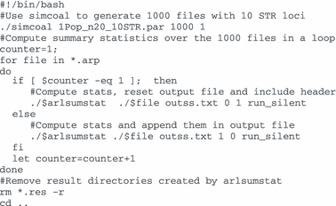
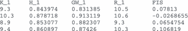

Arlequin suite ver 3.5: a new series of programs to perform population genetics analyses under Linux and Windows
Abstract
We present here a new version of the Arlequin program available under three different forms: a Windows graphical version (Winarl35), a console version of Arlequin (arlecore), and a specific console version to compute summary statistics (arlsumstat). The command‐line versions run under both Linux and Windows. The main innovations of the new version include enhanced outputs in XML format, the possibility to embed graphics displaying computation results directly into output files, and the implementation of a new method to detect loci under selection from genome scans. Command‐line versions are designed to handle large series of files, and arlsumstat can be used to generate summary statistics from simulated data sets within an Approximate Bayesian Computation framework.
Progress in sequencing technology (e.g. Metzker 2010) will soon provide access to genome‐wide sequence datasets. Whereas this is currently restricted to a few model species, non‐model organisms will also soon benefit from these technological advancements (Rokas & Abbot 2009), and new tools will be needed to analyse very large sequence data sets at the population level. Some software packages (e.g. plink Purcell et al. 2007) have been specifically developed to both handle such huge data sets and to directly perform statistical analyses on the data. However, given the rapid development of next‐generation sequencing, it appears likely that specific and specialized sequence data bases will be developed (e.g. Bekel et al. 2009), and statistical analyses will need to be performed separately on some data subsets.
While programs with graphical interfaces are easier to use by most users, they are not suited for analysing large data sets, which is more conveniently carried out using command line‐version of such programs. We describe here an updated and enhanced version of the arlequin population genetics package (Excoffier et al. 2005), including a graphical (Winarl35) and a command‐line (arlecore) version running both under windows, as well as command‐line 32‐ and 64‐bit Linux arlecore versions. The new version of Arlequin includes more elaborate XML output files that can be parsed by R functions to create and embed graphical outputs of several analyses, as well as several other enhancements detailed later. Finally, we provide a modified version of Arlequin under Windows and Linux, called arlsumstat, to specifically compute summary statistics on arlequin input data files. In addition to these executable programs, we provide a series of bash scripts that can run natively under Linux, but also under Windows after the installation of a Linux‐like environment like cygwin (http://www.cygwin.com). Detailed information on the new version of Arlequin, including a new user manual, screenshots, access to all executable files, and scripts can be found on http://cmpg.unibe.ch/software/arlequin35.
Novelties
XML output format
Until version 3.11, Arlequin produced output files in HTML format, and users now have the possibility to generate XML (eXtensible Markup Language) output files, which embeds the results of specific analyses into XML tags, allowing their formatting by a dedicated style sheet and their analysis by dedicated R functions.
R‐lequin
We have developed specific R functions to parse XML output files and to produce publication‐quality graphics from the output results delimited within XML tags. Upon request, these graphics are then embedded into the XML output files below the raw results. The source of the R functions is available in a folder called Rfunction in Arlequin root directory, and they can be customized by users for their specific needs. We chose R to produce these graphics because (i) it is a freely available package (http://www.r‐project.org/), (ii) it includes tools for parsing and generating XML files, allowing us to access tags of interest to get their attribute values and the data they contain, and for manipulating the XML structure (e.g. to add additional tags or attributes), and (iii) it provides very powerful graphic facilities for the production of many different diagrams and plots. Inclusion of PNG graphs into XML output files is carried out by simply pressing a dedicated ‘Rcmd’ button on winarl35 toolbar after the end of the computations.
Detecting loci under selection
We have implemented in Arlequin ver 3.5 a procedure to detect loci under selection from genome scans that contrast patterns of genetic diversity within and between populations, extending the fdist approach of Beaumont & Nichols (1996) to the case where populations are hierarchically structured (see Excoffier et al. 2009). In brief, observed locus‐specific measures of population differentiation (FST) are compared to a null distribution obtained by simulating samples under a hierarchical island model (Slatkin & Voelm 1991) using a coalescent approach. The P‐value of each locus is estimated from the joint distribution of heterozygosity and FST using a kernel density estimation procedure. Coalescent simulations can deal with different mutations models (infinite‐allele, stepwise mutation model, or unique event polymorphisms) allowing one to test microsatellite, standard multi‐allelic, DNA sequence, or SNP data. An example of the output of a genome scan analysis displaying the new graphics produced by Arlequin is shown in Fig. 1.

Graphical output of the joint distribution of heterozygosity and FST generated by Arlequin to detect loci potentially under selection from genome scans. Heterozygosity actually refers here to heterozygosity within population divided by (1−FST). The genetic diversity of 783 STR loci genotyped in 53 populations (Ramachandran et al. 2005) is summarized as circles on the graph. The null distribution generated under a hierarchical island model is summarized by quantiles of the joint distribution. The lower and upper red dotted lines represent the 1% and 99% quantiles of the distribution, the blue dashed lines represent the 5% and 95% quantiles of the distribution. The 50% quantile is represented by a solid black line. Loci below or above the red lines are marked as filled red circles and correspond to markers potentially under balancing or directional selection, respectively, at the 1% level, without multiple‐test correction and assuming one‐tailed tests. Blue circles denote markers significant at the 5% level. The identifier (ranging here potentially from 1 to 783) of the selected loci at the 1% level is reported next to the red filled circles.
Computations at the group level
It is now possible to perform all Arlequin computations at the group level. If this option is selected, Arlequin will use the genetic structure defined in Arlequin project to pool all samples belonging to a given group into a single sample and will then perform intra‐ and inter‐population statistical analyses on these newly defined samples and this in addition to the normal analyses carried out on the original samples. Note that with the command‐line version arlsumstat, one can choose to compute summary statistics either at the population level, at the group level, or at both levels. This option may be used to have an indication on the level of diversity within each group of samples or on the extent of differentiation between specific pairs of groups, without modifying the genetic structure in the project file. However, this specific option is certainly most useful when computing summary statistics on a series of hierarchically structured samples with arlsumstat. Such an approach has been recently used in an ABC analysis of the settlement of the Americas by humans (Ray et al. 2010). Several population samples were available in both Asia and in the Americas, and it thus made sense to simulate the genetic diversity of each sample rather than the diversity of a pooled sample of individuals ignoring continental subdivisions. However, as the parameters of interest were the mode and the timing of the colonization of the American continent from Asia, summary statistics were only computed at the group level for each continent and then used to estimate model parameters with ABC (see Ray et al. 2010 for details).
Command‐line versions of Arlequin
We introduce here two command‐line versions of Arlequin, arlsumstat and arlecore for both the Windows and the Linux environments. The purpose of these command‐line versions is to facilitate the analysis of large amounts of data, which can be conveniently distributed on a computer grid or a cluster.
Arlecore
Arlecore includes all the non‐graphical routines of winarl35 and will thus perform exactly the same computations as winarl35, as well as producing exactly the same outputs. Arlecore also requires the same input and settings files as winarl35. The settings file needs to have been created by winarl35, which allows one to save any selected computations and associated options into a settings file of arbitrary name. arlecore is launched on the command‐line with three arguments: (i) the name of an input file to be analysed; (ii) the name of a settings file specifying the computations that need to be performed. In absence of this argument, the default settings file ‘arl_run.ars’ will be used; and (iii) an optional keyword ‘run_silent’ that will, if present, prevent arlecore to write any computation progress messages to the console.
arlsumstat
Arlsumstat is a modified version of arlecore that will more specifically compute summary statistics on Arlequin projects. As input files, arlsumstat needs an Arlequin project file containing the data to be analysed, a settings file name called ‘arl_run.ars’ specifying the exact computations to be performed, and a definition file called ‘ssdefs.txt’ listing the summary statistics that need to be output. Note that selected summary statistics will only be output if the correct computational options are activated in the settings files (as listed in arlsumstat readme file). arlsumstat takes five arguments on the command line: (i) the name of the project file to be analysed; (ii) the name of an output file for summary statistics; (iii) a 0–1 flag specifying if the output file needs to be appended (1) or rewritten (0); (iv) a 0–1 flag specifying if a header with the names of the summary statistics needs being output (1) or not (0) before reporting the values of the summary statistics; and (v) an optional keyword ‘run_silent’ to prevent arlsumstat to write computation progress to the console.
arlsumstat was developed to analyse large quantities of Arlequin projects, as generated by coalescent simulation programs, like simcoal (Laval & Excoffier 2004) or splatche (Currat et al. 2004), for instance to generate the null distribution of some statistics under a given evolutionary model. arlsumstat can also be directly integrated into an Approximate Bayesian Computation framework, and such an integration has been performed in the ABCtoolbox package (Wegmann et al., 2010), which allows one to estimate parameters or to perform model choice based on massive simulations (like e.g. in Fagundes et al. 2007; or in Ray et al. 2010).
Example of the analysis of a large number of files with a bash script
We provide below an example of a simple bash script generating and analysing 1000 Arlequin project file, each file containing genetic diversity for 20 diploid individuals drawn from a stationary population of 5000 individuals and genotyped at 10 microsatellite loci.

Note that Arlequin input files could be generated one by one by moving the call to simcoal in the for loop, which would minimize disk space.
The first five lines of the output file ‘outss.txt” will look like

The first line is the header listing the names of the computed statistics K, H, GW, R, and FIS, which stand for the average number of alleles per locus, the average heterozygosity, the average Garza‐Williamson statistic (Garza & Williamson 2001), the average microsatellite allelic range, and the inbreeding coefficient, respectively. The _1 suffix indicates that these statistics have been computed in population sample 1, and different suffixes would indicate statistics computed in other population samples. This output file can be used to plot the joint or marginal distribution of the summary statics.
Acknowledgements and program availability
Arlequin updates have been developed while working on research projects supported by a Swiss NSF grant No‐3100A0‐126074 to LE. The new versions of Arlequin can be downloaded from http://cmpg.unibe.ch/software/arlequin35, which also contains links to a complete user manual for winarl35, readme files for arlsumstat and arlecore, example files, and bash scripts useful to launch command‐line versions of Arlequin.